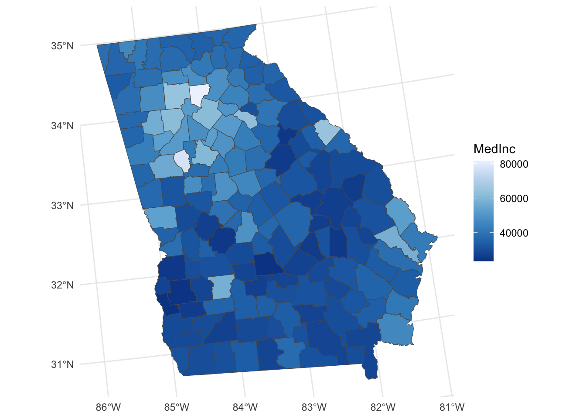
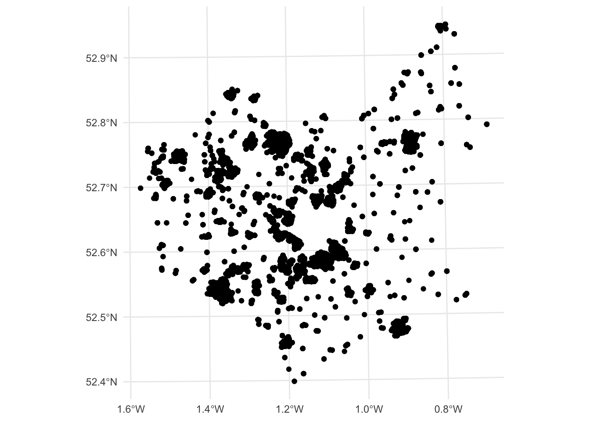
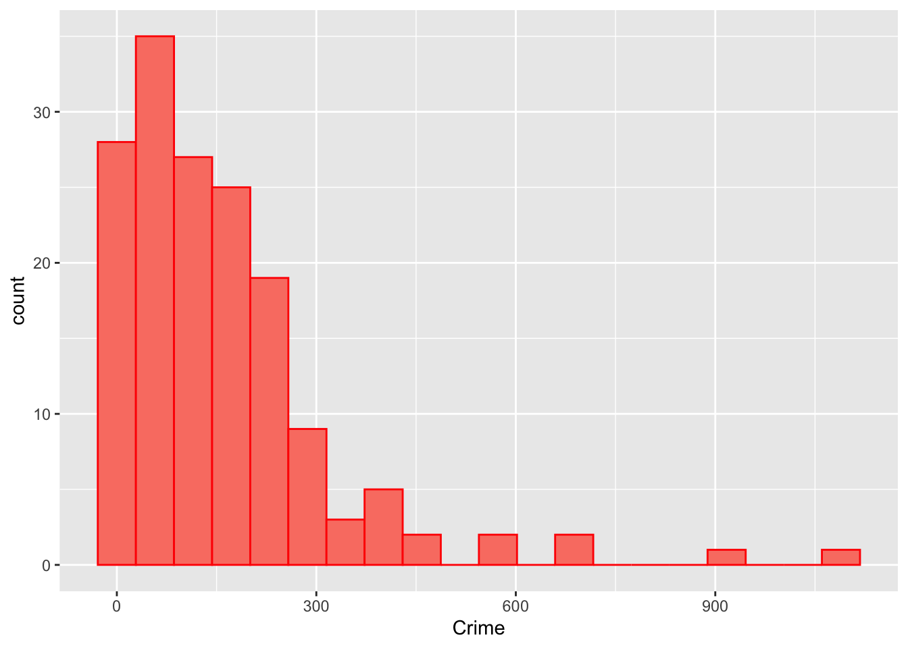
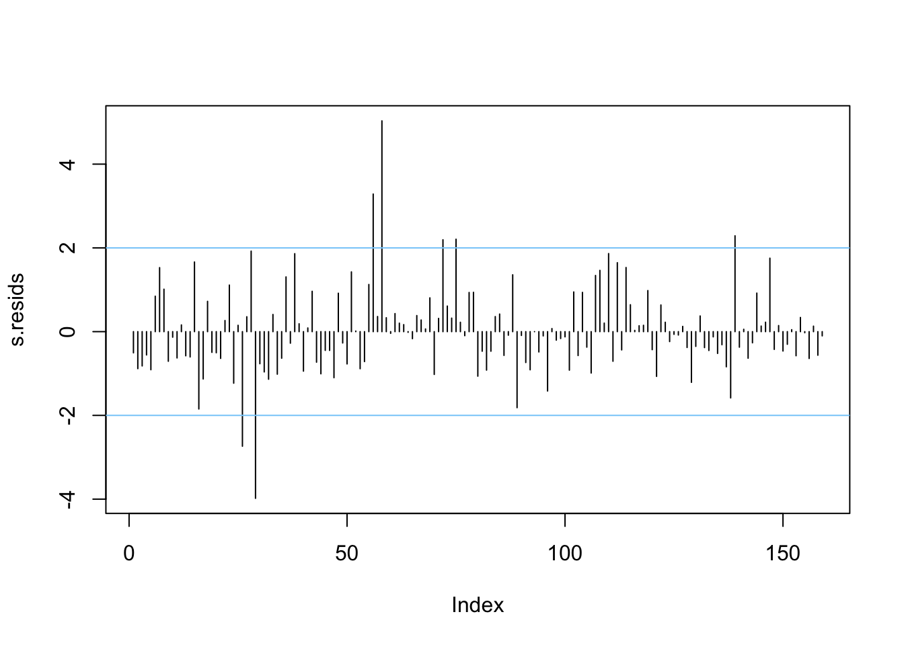
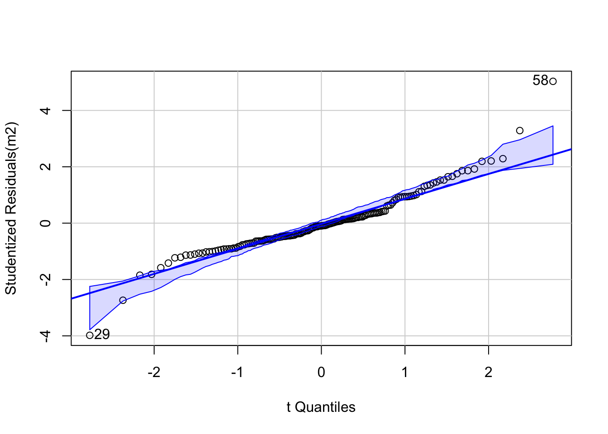
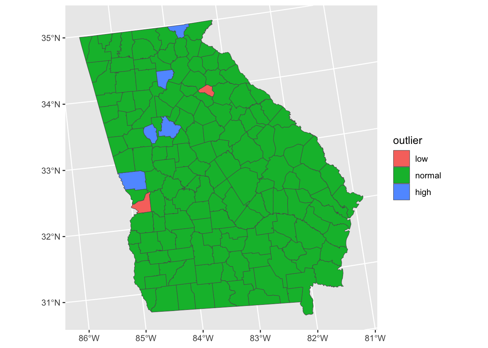

Unit 4 Regression
Overview
The main part of this practical shows how create models for understanding and for prediction. Confusingly these are both referred to as inference in the literature and so later in the worksheet there is small section distinguishing between these.
After this introduction the practical has the following parts:
- standard linear regression, or ordinary least squares (OLS) regression.
- generalised linear models (GLMs) with binomial (or logistic) regression
- generalised linear models (GLMs) with Poisson regression.
- the influence of outliers and robust regression
An understanding these is important as it underpins the ideas behind spatial regressions and spatial models covered in later sessions.
An R script with all the code for this practical is provided.
There is an excellent, recent and in-depth overview here which you may find useful to look at after the practical: https://mlu-explain.github.io/linear-regression/
Which regression approach?
So when do we use the different regression approaches? The key consideration relates to the distribution of the response variable. The response variable is the thing we are trying to make a model of, the \(y\). The target or predictor variables, the \(x\)’s are what we use to model \(y\).
Standard OLS Regression Standard OLS (ordinary least squares) regression is used when the response variable is normally distributed. Typically it is a continuous numeric variable that is expected to have a linear relationship with the predictor variables. That is, the response variable increases or decreases linearly with changes in the predictor variables. OLS seeks to determine coefficients for each predictor variable that describe how changes in the predictor variable are associated with changes in the target variable.
GLM Logistic or Binomial regression A Binomial distribution is one with 2 peaks at each end of the distribution. It is typically found when the response variable is binary or dichotomous - a Yes-No or True-False response. Rather than determine coefficients estimates that show how response variable change with predictors, in logistic regression they estimate provide an estimate of the probability one of the two responses using a GLM (generalised linear model).
GLM Poisson regression A Poisson distribution is one that is skewed to one end of the distribution or another. Count variables tend to bunch in this way, but percentages can as well. These are numeric but typically have integer or whole number values (1, 2, 10, 345, etc). Examples include counts of people with a degree in population survey. Variables with a Poisson distribution typically have an equal mean and variance. Similar to logistic regression, the Poisson GLM estimates probabilities of the observing the count.
Robust Regression Outliers are observation in the data that have different characteristics to other observations. They can weaken models and affect the regression coefficient estimates. They can be ignored (the data are the data after all!), removed and a standard regression applied, or their influence in the model can be down weighted using what is called a robust regression
Packages
You will need to load the following packages, testing for the presence on your R installation as before (although in a different way!):
packages <- c("sf", "tidyverse","tmap", "readxl", "rgl", "car", "MASS", "spdep", "readxl", "cowplot")
# check which packages are not installed
not_installed <- packages[!packages %in% installed.packages()[, "Package"]]
# install missing packages
if (length(not_installed) > 1) {
install.packages(not_installed, repos = "https://cran.rstudio.com/", dep = T)
}
# load the packages
library(sf) # for spatial data
library(tidyverse) # for data wrangling & mapping (ggplot2)
library(readxl) # for loading Excel data
library(rgl) # for 3d plotting
## NB If you have a MAc you will need to install XQuartz for the rgl package
# - see https://www.xquartz.org
library(car) # for some stats tools
library(MASS) # for robust regression
library(readxl) # for loading remote Excel data
library(cowplot) # for combining plots4.1 Standard linear regression models (OLS)
Regression models are the standard method for constructing predictive and explanatory models. They tell us how changes in one variable (the target variable or independent variable, \(y\)) are associated with changes in explanatory variables, or dependent variables, \(x_1\), \(x_2\), etc. They underpin classic statistical inference and most of the approaches that are commonly referred to as machine learning and AI - these are really just fancy flavours of regression.
Classic linear regression is referred to Ordinary least squares (OLS) regression because they estimate the relationship between one or more independent variables and a dependent variable, \(y\) using a hyperplane (i.e. a multi-dimensional line - more on this later!) that minimises the sum of the squared difference between the observed values of \(y\) and the values predicted by the model (\(\hat{y\ }\), called ‘\(y\)-hat’).
What we are looking for in the plots and table above are correlations that look like straight lines, showing that values in one variable change linearly with changes in another. The correlations between the variables indicate that a number of the variables are highly correlated (< -0.7 or > +0.7) with each other and with the response variable MedInc, and others less so. This provides us with confidence that we can construct a reasonable model from this data - at least some of the variables are correlated with MedInc.
We will start with a hypothesized model of Median Income in the state of Georgia at a county level, that is associated with rurality (PctRurual), whether people went to university (PctBach), how old the population is (PctEld), the number of people that are foreign born (PctFB), the percentage of the population classed as being in poverty (PctPov) and as being black (PctBlack) (NB I recognise that there are lots of issues with these labels but that is another module / session).
In R we can construct a regression model using the function lm which stands for linear model. This is a standard OLS regression function, and although simple it is very powerful. There are many variants and functions for manipulating lm outputs: remember R was originally a stats package.
The equation for a basic linear regression is:
\[\begin{equation} y_i = \beta_{0} + \sum_{k=1}^{m}\beta_{k}x_{ik} + \epsilon_i \label{eq:lm2} \end{equation}\]
where for observations indexed by \(i=1 \dots n\), \(y_i\) is the response variable, \(x_{ik}\) is the value of the \(k^{th}\) predictor variable, \(m\) is the number of predictor variables, \(\beta_0\) is the intercept term, \(\beta_k\) is the regression coefficient for the \(k_{th}\) predictor variable and \(\epsilon_i\) is the random error term that is independently normally distributed with zero mean and common variance \(\sigma^2\). OLS is commonly used for model estimation in linear regression models.
You will need to load the georgia data. This is a commonly used dataset in R (for example, it is contained within the spgwr, GWmodel and GISTools packages and is now being used in the gwverse package (Comber et al. 2022). It has census data for the counties in Georgia, USA.
download.file("https://github.com/gwverse/gw/blob/main/data/georgia.rda?raw=True",
"./georgia.RData", mode = "wb")
load("georgia.RData")You should examine this in the usual way:
# spatial data
georgia
# sumamry of variables
summary(georgia)
# a map of the counties
ggplot(georgia) + geom_sf(fill = NA)And have a look at the target variable:
ggplot(georgia) + geom_sf(aes(fill = MedInc)) +
scale_fill_distiller(palette = "Blues") +
theme_minimal()
Figure 4.1: A map of the Median Income variable.
You will see that georgia contains a number of variables for the counties including the percentage of the population in each County that:
- is Rural (
PctRural) - have a college degree (
PctBach) - are elderly (
PctEld) - that are foreign born (
PctFB) - that are classed as being in poverty (
PctPov) - that are black (
PctBlack)
and the median income of the county (MedInc in dollars)
And as we have done some EDA now, you might want to explore the properties of the attributes in georgia layer. Note we will be creating models of median income (MedInc). Do these summaries tell us anything useful? (Answer: yes they do!) The code below plots histograms and paired scatterplots of the variables. Note the use of dplyr::select below to force R to use the select function in dplyr. This is because other functions also called select may have been loaded by other packages.
## variable histograms
# set the pipe and drop the sf geometry
georgia |> st_drop_geometry() |>
# select the numerical variables of interest
dplyr::select(ID, TotPop90:PctBlack, MedInc) |>
# convert to long format
pivot_longer(-ID) |>
# pass to a faceted ggplot
ggplot(aes(x = value)) + geom_histogram(bins = 30, col = "red", fill = "salmon") +
facet_wrap(~name, scales = "free", ncol = 4)
# correlations
cor.tab = georgia %>% st_drop_geometry() %>%
dplyr::select(MedInc, TotPop90:PctBlack) %>% cor()
round(cor.tab, 3)
# paired scatterplots
plot(st_drop_geometry(georgia[, c(14, 3:8)]),
pch = 1, cex = 0.7, col = "grey30", upper.panel=panel.smooth)In our case, the response variable \(y\) is median income (MedInc), and the 6 (i.e. \(k\)) socio-economic variables are PctRural, PctBach, PctEld, PctFB, PctPov, PctBlack are the different predictor variables, the \(k\) different \(x\)’s.
Specifying the model
The basic formula in R to specify a linear regression model, lm is as follows (don’t run this - just look at it!):
# don't run this!
model = lm(variable_we_are_trying_to_predict ~ predictor_variable1 +
predictor_variable2...)where the ~ sign (tilde) separates the variable we are trying to model (the response variable) from the variables we will use to predict it, the predictor variables. The predictor variables are usually separated by a + sign - meaning that they are linear terms in the model added together.
We can specify our first model.
The summary function here provides a print out of the model:
##
## Call:
## lm(formula = MedInc ~ PctRural + PctBach + PctEld + PctFB + PctPov +
## PctBlack, data = georgia)
##
## Residuals:
## Min 1Q Median 3Q Max
## -12420.3 -2989.7 -616.3 2209.5 25820.1
##
## Coefficients:
## Estimate Std. Error t value Pr(>|t|)
## (Intercept) 52598.95 3108.93 16.919 < 2e-16 ***
## PctRural 73.77 20.43 3.611 0.000414 ***
## PctBach 697.26 112.21 6.214 4.73e-09 ***
## PctEld -788.62 179.79 -4.386 2.14e-05 ***
## PctFB -1290.30 473.88 -2.723 0.007229 **
## PctPov -954.00 104.59 -9.121 4.19e-16 ***
## PctBlack 33.13 37.17 0.891 0.374140
## ---
## Signif. codes: 0 '***' 0.001 '**' 0.01 '*' 0.05 '.' 0.1 ' ' 1
##
## Residual standard error: 5155 on 152 degrees of freedom
## Multiple R-squared: 0.7685, Adjusted R-squared: 0.7593
## F-statistic: 84.09 on 6 and 152 DF, p-value: < 2.2e-16There are lots of things to look at in the summary of the model but we will focus on 3 aspects:
First, Significance. If we examine the model we can see that nearly all of the dependent variables are significant predictors of Median Income. The level of significance is indicated by the p-value in the column \(Pr(>|t|)\) and the asterisks \(*\). For each coefficient \(\beta_k\) these are the significance levels associated with the NULL hypothesis \(\textsf{H}_0 : \beta_k = 0\) against the alternative \(\textsf{H}_1 : \beta_k \ne 0\). This corresponds to the probability that one would obtain a \(t\)-statistic for \(\beta_k\) at least as large as the one observed given \(\textsf{H}_0\) is true.
The p-value provides a measure of how surprising the relationship is and indicative of whether the relationship between \(x_k\) and \(y\) found in this data could have been found by chance. Very small p-values suggest that the level of association found here could not have come from a random sample of data. Cutting to the chase, small p-values mean strong evidence for a non-zero regression coefficient.
So in this case we can say:
- ‘changes in
PctFBare significantly associated with changes inMedIncat the \(0.001\) level’. This means that the association between the predictor and the response variables is not one that would be found by chance in a series of random samples \(99.999\%\) of the time. Formally we can reject the Null hypothesis that there is no relationship between changes in MedInc and PctFB - ‘changes in
PctRural,PctBach,PctEld, andPctPovare significantly associated with changes inMedIncat the at the \(<0.001\) level’, which is actually an indicator of less than \(0.001\). So were are even more confident that the observed relationship between these variables and MedInc are not by chance and can again confidently reject the Null hypotheses. PctBlackwas not found to be significantly associated withMedInc.
Second, the Coefficient Estimates. These are the \(\beta_{k}\) values that tell you the rate of change between \(x_k\) and \(y\) in the column ‘Estimate’ in the summary table. The first of these is the Intercept. This is \(\beta_0\) in the regression equation and tells you the value of \(y\) if \(x_1 \cdots x_k\) are all zero.
For the dependent or predictor variables, \(x_k\), we can now see how changes of 1 unit for the different predictor variables are associated with changes in MedInc:
- The association of
PctRuralis positive but small: each increase in 1% ofPctRuralis associated with an increase of $73.7 in median income; - The association of
PctBachis positive, with each additional 1% of the population with a bachelors degree associated with an in increase of $697; - each increase of 1% of
PctEldis associated with a decrease in median income of $789; - each increase of 1% of
PctFBis associated with a decrease in median income of $1290; - each increase of 1% of
PctPovis associated with a decrease in median income of $954;
So the regression model m gives us an idea of how different factors are associated with the target variable for Median Income in the counties of the state of Georgia and their interaction. Note the way that this is described: we have no indication of causality between the factors and Median Income, and so we cannot say that changes in coefficient estimates would explain changes in Median Income, rather they are associated with Median Income changes. This syntax is important - these are statistical associations.
Third, the model fit given by the \(R^2\) value. This provides a measure of model fit. This is calculated as the difference between the actual values of \(y\) (e.g. of MedInc) and the values predicted by the model - sometimes written as \(\hat{y\ }\) (called ‘\(y\)-hat’). A good description is here http://blog.minitab.com/blog/adventures-in-statistics-2/regression-analysis-how-do-i-interpret-r-squared-and-assess-the-goodness-of-fit
Generally \(R^2\)’s of greater than 0.7 indicate a reasonably well fitting model. Some users of this method describe a low \(R^2\) as ‘bad’ - they are not - it just means you a have a more imprecise model - the predictions are a bit wrong-er! Essentially there is a sliding scale of reliability of the predictions - based on the relative amounts of deterministic and random variability in the system being analysed - and \(R^2\) is a measure of this.
Task 1
Create an OLS model with the PctEld variable as the target variable and PctRural, PctPov, PctBach and PctFB as the target variables. Interpret the model outputs including the coefficient estimates, significance and model fit.
4.2 Binomial Logistic Regression for binary variables
Generalized Linear Models (GLMs) allow regression models to be specified in situations where the response and / or the predictor variables do not have a normal distribution. An example is where the response is a True-False, Yes-No or 1-0. The practical replicates some of the results from Comber et al. (2011), evaluating geographic and perceived access to health facilities. It develops an analysis of a binary response variable describing perceptions of difficulty in GP access in Leicestershire using data collected via a survey.
You should load some new data :
Have a look at this data and its attributes in the usual way:
## Simple feature collection with 8530 features and 20 fields
## Geometry type: POINT
## Dimension: XY
## Bounding box: xmin: 428996.3 ymin: 278160.6 xmax: 488368.7 ymax: 339447.7
## Projected CRS: OSGB36 / British National Grid
## First 10 features:
## REF1 GP Dentist Chemist
## 1 705030002 Fairly easy Fairly easy Fairly easy
## 2 705030004 Fairly easy Neither easy nor difficult Fairly easy
## 3 705030005 Fairly easy Fairly easy Fairly easy
## 4 705030890 Very easy Very easy Very easy
## 5 705030891 Very difficult Very difficult Very difficult
## 6 705030894 Fairly difficult Fairly difficult Fairly difficult
## 7 705030895 Fairly easy Fairly easy Fairly easy
## 8 705030899 Fairly easy Fairly easy Fairly easy
## 9 705030095 Very easy Very easy Very easy
## 10 705030101 Very easy Very easy Very easy
## LocalHosp Health Illness IMD2007ALL Hosp AE Doc
## 1 Fairly easy Good Do not have 13.506194 9115.503 13763.71 4097.7625
## 2 Neither easy nor difficult Good Do not have 13.506194 8227.506 13280.71 3384.7649
## 3 Fairly easy Very good Do not have 13.506194 8401.373 13454.58 3558.6326
## 4 Neither easy nor difficult Very good Do not have 7.728222 13995.208 18111.41 3135.1070
## 5 Very difficult Very good Do not have 7.728222 14055.528 18171.73 3074.7871
## 6 Fairly difficult Good Do not have 7.728222 13905.840 18345.04 2723.0989
## 7 Fairly easy Very good Do not have 7.728222 14877.166 19316.37 3694.4257
## 8 Neither easy nor difficult Very good Do not have 7.728222 15033.763 19472.97 3851.0225
## 9 Neither easy nor difficult Good Do not have 5.714707 13837.316 17467.90 1188.2823
## 10 Fairly difficult Good Do not have 11.839684 13271.580 18243.05 413.1231
## label popeast popnorth rural oac REF1_1 cars
## 1 31UEFU0010 440376.8 300305.5 Hamlet & Isolated Dwellings Countryside 705030002 4
## 2 31UEFU0010 440376.8 300305.5 Hamlet & Isolated Dwellings Countryside 705030004 2
## 3 31UEFU0010 440376.8 300305.5 Hamlet & Isolated Dwellings Countryside 705030005 2
## 4 31UEGA0002 439700.0 305037.9 Village Countryside 705030890 2
## 5 31UEGA0002 439700.0 305037.9 Village Countryside 705030891 3
## 6 31UEGA0002 439700.0 305037.9 Village Countryside 705030894 1
## 7 31UEGA0011 439571.9 306769.6 Village Countryside 705030895 2
## 8 31UEGA0011 439571.9 306769.6 Village Countryside 705030899 3
## 9 31UEFW0006 443344.2 305529.1 Hamlet & Isolated Dwellings Countryside 705030095 1
## 10 31UEFW0004 442862.8 305615.2 Town and Fringe Typical Traits 705030101 1
## coords_x1 coords_x2 geom
## 1 440376.8 300305.5 POINT (440376.8 300305.5)
## 2 440376.8 300305.5 POINT (440376.8 300305.5)
## 3 440376.8 300305.5 POINT (440376.8 300305.5)
## 4 439700.0 305037.9 POINT (439700 305037.9)
## 5 439700.0 305037.9 POINT (439700 305037.9)
## 6 439700.0 305037.9 POINT (439700 305037.9)
## 7 439571.9 306769.6 POINT (439571.9 306769.6)
## 8 439571.9 306769.6 POINT (439571.9 306769.6)
## 9 443344.2 305529.1 POINT (443344.2 305529.1)
## 10 442862.8 305615.2 POINT (442862.8 305615.2)## REF1 GP Dentist Chemist LocalHosp
## Min. :705000001 Length :8530 Length :8530 Length :8530 Length :8530
## 1st Qu.:705012238 N.unique : 7 N.unique : 7 N.unique : 7 N.unique : 7
## Median :705031305 N.blank : 0 N.blank : 0 N.blank : 0 N.blank : 0
## Mean :705030817 Min.nchar: 9 Min.nchar: 9 Min.nchar: 9 Min.nchar: 9
## 3rd Qu.:705050463 Max.nchar: 29 Max.nchar: 29 Max.nchar: 29 Max.nchar: 29
## Max. :705063148
## Health Illness IMD2007ALL Hosp AE
## Length :8530 Length :8530 Min. : 0.000 Min. : 35.31 Min. : 3115
## N.unique : 6 N.unique : 3 1st Qu.: 5.795 1st Qu.: 4754.64 1st Qu.: 7829
## N.blank : 0 N.blank : 0 Median : 8.548 Median : 7640.60 Median :13435
## Min.nchar: 3 Min.nchar: 7 Mean :10.506 Mean : 9482.88 Mean :13803
## Max.nchar: 12 Max.nchar: 12 3rd Qu.:13.422 3rd Qu.:12898.21 3rd Qu.:19023
## Max. :50.983 Max. :26891.84 Max. :28811
## Doc label popeast popnorth rural
## Min. : 0 Length :8530 Min. :428996 Min. :278161 Length :8530
## 1st Qu.: 658 N.unique :1962 1st Qu.:446560 1st Qu.:297519 N.unique : 5
## Median :1088 N.blank : 0 Median :455275 Median :304299 N.blank : 0
## Mean :1445 Min.nchar: 10 Mean :456315 Mean :306403 Min.nchar: 4
## 3rd Qu.:1709 Max.nchar: 13 3rd Qu.:463235 3rd Qu.:316888 Max.nchar: 27
## Max. :8526 Max. :488369 Max. :339448
## oac REF1_1 cars coords_x1 coords_x2
## Length :8530 Min. :705000001 Min. :0.000 Min. :428996 Min. :278161
## N.unique : 8 1st Qu.:705012238 1st Qu.:1.000 1st Qu.:446560 1st Qu.:297519
## N.blank : 0 Median :705031305 Median :1.000 Median :455275 Median :304299
## Min.nchar: 4 Mean :705030817 Mean :1.359 Mean :456315 Mean :306403
## Max.nchar: 28 3rd Qu.:705050463 3rd Qu.:2.000 3rd Qu.:463235 3rd Qu.:316888
## Max. :705063148 Max. :4.000 Max. :488369 Max. :339448
## geom
## POINT :8530
## epsg:27700 : 0
## +proj=tmer...: 0
##
##
## 
Figure 4.2: A map of the observation locations.
You should see that there are 8530 data points, distributed around Leicestershire and that there are a number of attributes of potential interest.
What we are interested in this analysis is the degree to which different factors can examine respondent perceptions of their difficulty in accessing GP surgeries. The following variables will be used in this analysis:
GP: perceptions of difficulty in their access to GPs;Health: their declared health status;Illness: whether they have a limiting long term illness;Doc: distance from the respondent’s home postcode to the nearest GP surgery - this was calculated after the survey;cars: the number of cars they own, specifically we can use this to determine non-car ownership.
A bit of pre-processing is needed to get these into a format that is suitable for analysis. First the data is subsetted to include the variables of interest.
The text descriptions for GP, Health, Illness and cars need to be converted to binary variables and the piping syntax with transmute can be used to wrangle our data into a suitable format:
# convert the data
data.pt |>
transmute(
DocDiff = (GP == "Fairly difficult" | GP == "Very difficult")+0,
BadHealth = (Health == "Bad" | Health == "Very bad")+0,
Illness = (Illness == "Do have")+0,
NoCar = (cars == 0)+0,
DocDist = Doc/1000) -> data.ptNote that the code snippet above has converted the logical TRUE and FALSE values to 1s and 0s by adding the +0 to the end of the logical tests, and that distance has been converted to km.
## Simple feature collection with 8530 features and 5 fields
## Geometry type: POINT
## Dimension: XY
## Bounding box: xmin: 428996.3 ymin: 278160.6 xmax: 488368.7 ymax: 339447.7
## Projected CRS: OSGB36 / British National Grid
## First 10 features:
## DocDiff BadHealth Illness NoCar DocDist geom
## 1 0 0 0 0 4.0977625 POINT (440376.8 300305.5)
## 2 0 0 0 0 3.3847649 POINT (440376.8 300305.5)
## 3 0 0 0 0 3.5586326 POINT (440376.8 300305.5)
## 4 0 0 0 0 3.1351070 POINT (439700 305037.9)
## 5 1 0 0 0 3.0747871 POINT (439700 305037.9)
## 6 1 0 0 0 2.7230989 POINT (439700 305037.9)
## 7 0 0 0 0 3.6944257 POINT (439571.9 306769.6)
## 8 0 0 0 0 3.8510225 POINT (439571.9 306769.6)
## 9 0 0 0 0 1.1882823 POINT (443344.2 305529.1)
## 10 0 0 0 0 0.4131231 POINT (442862.8 305615.2)Logistic regression should be used when modelling a binary outcome from a set of continuous and / or binary predictor variables. We are now in a position to create a logistic regression model and have a look at the results. Note the specification of the family as binomial with a logit link in the code below.
#create the model
m.glm = glm(formula = DocDiff~Illness + BadHealth + DocDist + NoCar,
data = data.pt,
family= binomial(link = "logit"))
# inspect the results
summary(m.glm) ##
## Call:
## glm(formula = DocDiff ~ Illness + BadHealth + DocDist + NoCar,
## family = binomial(link = "logit"), data = data.pt)
##
## Coefficients:
## Estimate Std. Error z value Pr(>|z|)
## (Intercept) -4.10048 0.10373 -39.530 < 2e-16 ***
## Illness 0.58943 0.11042 5.338 9.39e-08 ***
## BadHealth 0.52257 0.17616 2.966 0.00301 **
## DocDist 0.29524 0.02988 9.879 < 2e-16 ***
## NoCar 1.33701 0.11031 12.121 < 2e-16 ***
## ---
## Signif. codes: 0 '***' 0.001 '**' 0.01 '*' 0.05 '.' 0.1 ' ' 1
##
## (Dispersion parameter for binomial family taken to be 1)
##
## Null deviance: 3318.6 on 8529 degrees of freedom
## Residual deviance: 3039.5 on 8525 degrees of freedom
## AIC: 3049.5
##
## Number of Fisher Scoring iterations: 6This shows that all of the inputs are significant predictors of experiencing difficulty over GP access. This model is of the form:
\[\begin{equation} pr(y_1 = 1) = logit(\beta_0 + \beta_{1}x_{1}+\beta_{2}x_{2}+\beta_{3}x_{3}+\beta_{4}x_{4}) \label{eq:eglm} \end{equation}\]
where the logit function is defined as
\[\begin{equation} logit(Q) = \frac{exp(Q)}{1 + exp(Q)} \end{equation}\]
and \(y_1\) is a 0/1 indicator showing whether the respondent expressed difficulty in their access to GPs, \(x_1\) is an 0/1 indicator variable showing whether the respondent said they had a Long Term Illness, \(x_2\) is an indicator variable stating whether the respondent considered they were in Bad Health, \(x_3\) is the distance from the respondent to their nearest GP surgery based on road network distance and \(x_4\) is a 0/1 indication of car ownership.
So what does the model say? We have to use the exponential or antilog of the coefficient estimates using the exp function to generate probabilities (odds ratios). The confidence intervals that show the range of plausible values (i.e. within a 95% probability of not being found by chance), in absence of a model fit statistic.
## (Intercept) Illness BadHealth DocDist NoCar
## 0.01656477 1.80295494 1.68634808 1.34344909 3.80765553## Waiting for profiling to be done...## 2.5 % 97.5 %
## (Intercept) 0.01346685 0.0202271
## Illness 1.45106558 2.2376869
## BadHealth 1.18425653 2.3651566
## DocDist 1.26583777 1.4233458
## NoCar 3.06412578 4.7230562What these show is that the probability of respondents experiencing difficulty in accessing their GP …
- is 1.8 times more likely for those with Long Term Illness than for those without, with a CI or likely range of between 1.5 and 2.2 times;
- is 3.8 times more likely for those without a car than for those who have one, with a CI of between 3.1 and 4.7 times;
- is 1.7 times more likely for respondents with Bad Health than for those without, with a CI of between 1.2 and 2.4;
- increases by 34% (1.34) for each extra km to the nearest GP surgery, with a CI of between 27% and 42% .
The paper by Comber et al. (2011) has very slightly different results due to some data cleaning differences. It also shows how these odds ratio (likelihoods) vary spatially and demonstrates that distance does not work in this way for hospitals (one of the main aims of the paper was to unpick access and accessibility in the health and geography literature).
Task 2
Create and interpret a binomial GLM with the target variable of LocalHosp (difficulty in access to a local hospital) using the following target variables:
Health: their declared health status;Illness: whether they have a limiting long term illness;Hosp: distance from the respondent’s home postcode to the nearest GP surgery - this was calculated after the survey;cars: the number of cars they own, specifically we can use this to determine non-car ownership.
A bit of pre-processing is needed to get these into a format that is suitable for analysis. First the data reloaded and then subsetted to include the variables of interest.
data.pt = st_read("place_survey_pts.gpkg", quiet = T)
data.pt <- data.pt %>% dplyr::select(LocalHosp, Health, Illness, Hosp, cars) Again the text descriptions need to be converted to binary variables:
# convert the data
data.pt %>%
transmute(
HospDiff = (LocalHosp == "Fairly difficult" | LocalHosp == "Very difficult") + 0,
BadHealth = (Health == "Bad" | Health == "Very bad") + 0,
Illness = (Illness == "Do have") + 0,
NoCar = (cars == 0) + 0,
HospDist = Hosp/1000) -> data.ptNB You are advised to attempt the tasks after the timetabled practical session. Worked answers are provided in the last section of the worksheet.
4.3 Poisson Regression for count variables
An important assumption in OLS is that the \(y_i\) variable is assumed to have a normal distribution, whose mean is determined by the predictor variables (as \(\beta_0 + \sum_k \beta_kx_{ik}\)) and whose variance is \(\sigma^2\). For many data, this is not the case: counts, binary responses (Yes/No, True/False, etc).
Suppose the value of \(y_i\) was a count of some phenomenon - for example the number of crimes committed in a month, or the number of houses sold (rather than the price). Then, the normal distribution is not a sensible model because:
- \(y_i\) can only take integer values
- \(y_i\) takes a minimum value of zero
or, more bluntly, \(y_i\) is not normally distributed! Typically count data are modelled by the Poisson distribution:
\[ \textsf{Prob}(y_i=j) = \frac{e^{-\lambda}\lambda^j}{j!} \] where \(\lambda\) is the mean value of \(y_i\). There is a constraint that \(\lambda > 0\). Here \(\lambda\) is a constant parameter, but if this depended on some predictor variables, we would have a prediction model similar to OLS, but with \(y_i\) as a Poisson distributed count variable rather than a normally distributed continuous one. In principal, one could specify the model so that \(\lambda_i\), the mean value for observation \(i\), is given by \(\lambda_i = \beta_0 + \sum_k\beta_kx_{ij}\) however, this could lead to problems if a negative value of \(\lambda_i\) were predicted. One way of overcoming this is to specify a log-transformed relationship:
\[ \log(\lambda_i) = \beta_0 + \sum_{k=1}^{k=m} \beta_k x_{ik} \]
which is the standard form for Poisson regression.
Taking antilogs on both sides, the effect on the expected value is a multiplicative one:
\[ \lambda_i = e^{\beta_0} \times e^{\beta_1 x_{i1}} \times \cdots e^{\beta_k x_{ik}} \]
so that the expected number of observations changes by a scale factor (i.e. a ratio) for a unit change in a predictor variable. In particular for a coefficient \(\beta_k\), the factor is \(e^{\beta_k}\) - this is useful in interpreting the model.
A final - and extra - feature found in some Poisson regression model is the idea of an offset. For many geographical count-based regressions, there is a ‘population at risk’ - for example the total population of an area when counting people having a particular illness. In this case an expected count is essentially a rate of occurrence multiplied by the population at risk. The model can be written as
\[ \lambda_i = P_i \times e^{\beta_0} \times e^{\beta_1 x_{i1}} \times \cdots e^{\beta_k x_{ik}} \] where \(P_i\) is the population at risk. Writing \(P_i\) as \(e^{\log(P_i)}\) this is really just another predictor term (in \(\log(P_i)\)) but with the coefficient being fixed at the value 1, rather than being calibrated. Such a term can be specified in R - and is referred to as an offset term.
We can download some crime data for Georgia from here https://georgiadata.org/data/data-tables and then read into our session using the readxl package
You can examine what is loaded
Here, we will use the 2019 Total Index Crimes Reported variable which you can examine the distribution of after converting to integer (counts) and linking to the georgia layer:
# reformat crime
# notice the renaming with mutate and the selection of the variables
crime <-
crime |>
mutate(County = tolower(County),
Crime = as.integer(`2020 Reported Violent Crime Rate per 100,000 Population`)) |>
dplyr::select(County, Crime)
# link to georgia
georgia <-
georgia |>
mutate(Name = tolower(Name)) |>
left_join(crime, by = c("Name" = "County"))
# histogram
ggplot(georgia, aes(x = Crime)) +
geom_histogram(bins = 20, col = "red", fill = "salmon")
Figure 4.3: The distribution of the crime data.
Here the response variable is Crime. This is the \(y\)-variable. A number of variables are used as predictors:
PctPov: an indicator of economic and social deprivation. Higher values correspond to more deprived areas.PctBach: the percentage of people with bachelors degrees.PctFB: the percentage of people with who are foreign born.TotPop90: the population at risk - the log of this will be the offset variable here.
The regression is set out below:
m.pois <- glm(formula = Crime~PctPov + PctBach + PctFB + offset(log(TotPop90)),
data=georgia,
family=poisson())
summary(m.pois)##
## Call:
## glm(formula = Crime ~ PctPov + PctBach + PctFB + offset(log(TotPop90)),
## family = poisson(), data = georgia)
##
## Coefficients:
## Estimate Std. Error z value Pr(>|z|)
## (Intercept) -5.399411 0.027419 -196.92 <2e-16 ***
## PctPov 0.065010 0.000987 65.87 <2e-16 ***
## PctBach -0.068933 0.001567 -43.99 <2e-16 ***
## PctFB -0.135629 0.007665 -17.70 <2e-16 ***
## ---
## Signif. codes: 0 '***' 0.001 '**' 0.01 '*' 0.05 '.' 0.1 ' ' 1
##
## (Dispersion parameter for poisson family taken to be 1)
##
## Null deviance: 45077 on 158 degrees of freedom
## Residual deviance: 22370 on 155 degrees of freedom
## AIC: 23311
##
## Number of Fisher Scoring iterations: 5The poverty coefficient (PctPov) is positive and significant. The PctBach (degrees) and PctFB (foreign born) are both negative and and significant, suggesting a link between crime risk with higher levels of poverty, lower levels of people with degrees and who are foreign born. Again the antilogs of the coefficients are used to interpret the coefficients using the function, exp:
## (Intercept) PctPov PctBach PctFB
## -5.39941086 0.06500999 -0.06893345 -0.13562875## (Intercept) PctPov PctBach PctFB
## 0.004519243 1.067169689 0.933388793 0.873166736These show that an increase of 1% of
- poverty corresponds to 7% rise in the crime rate
- bachelor degrees corresponds to the 7% decrease in the crime rate
- foreign born corresponds to to 13% decrease in the crime rate
Again we generate confidence intervals that show the range of plausible values (i.e. within a 95% probability of not being found by chance), in absence of a model fit statistic.
## Waiting for profiling to be done...## 2.5 % 97.5 %
## (Intercept) 0.004 0.005
## PctPov 1.065 1.069
## PctBach 0.931 0.936
## PctFB 0.860 0.886In this case the CIs are very tight, suggesting a strong model fit.
4.4 Outliers and Robust regression
So we have made an OLS model m. We have a measure of model fit and some idea of the relationships between the independent variable (or target variable \(y\)) and the dependent variables (or explanatory variables, or predictor variables \(x_1\), \(x_2\), etc) through the coefficient estimates, and we know the degree to which those relationships might be found by chance through the p-values indicating significance.
Now the model has been fitted to find the line in multivariate feature space that best fits the data points. This is how OLS works. To illustrate what is meant by this, the code below creates a second model using just 2 variables to predict Median Income:
##
## Call:
## lm(formula = MedInc ~ PctEld + PctBach, data = georgia)
##
## Residuals:
## Min 1Q Median 3Q Max
## -27452 -4604 -751 2842 36394
##
## Coefficients:
## Estimate Std. Error t value Pr(>|t|)
## (Intercept) 50012.7 3555.2 14.067 < 2e-16 ***
## PctEld -1620.3 227.6 -7.120 3.71e-11 ***
## PctBach 562.5 123.1 4.571 9.83e-06 ***
## ---
## Signif. codes: 0 '***' 0.001 '**' 0.01 '*' 0.05 '.' 0.1 ' ' 1
##
## Residual standard error: 7832 on 156 degrees of freedom
## Multiple R-squared: 0.4515, Adjusted R-squared: 0.4445
## F-statistic: 64.21 on 2 and 156 DF, p-value: < 2.2e-16Although both covariates are significant, this is a much looser model, with a much lower \(R^2\).
What a linear regression model tries to do is to find the hyperplane that minimising the distance between it and all the observations, the data points. The best fitting hyperplane is the one that has the minimum summed distance between each observation value and the plane. We can visualise this for our second model using a 3D plot. The code below should generate a pop-out window that you can manipulate (rotate, zoom, etc):
plot3d(m2, col="orange", type = 's', size=1,
vars = georgia |> st_drop_geometry() |> dplyr::select(MedInc, PctEld, PctBach) )
# run the code below to see the plot in your RStudio session
# rglwidget(width = 600, height = 1100, reuse = FALSE)If you rotate this, you will see that some of the observations (points) are very close to the hyperplane and others are far away. This means that the model describes the relationship between MedInc and PctEld and PctFBwell for the data points near to the plane, but less well for those further way. The ones that are far away are called model outliers. Essentially these are observations (data points) that the model, indicated by the plane in this case, does not predict very well.
We will examine outliers in this section.
Outliers are records or observations that the model does not describe very well, either vastly over-predicting Median Income or under-predicting it. In the m2 model above these were easy to find, since they were just the points lying a long way from the regression plane. However, when there are multiple predictors then the hyperplane is fitted to a multi-dimensional space, which in the case of model m created earlier is a 7-dimensional space, which is difficult to visualise and explore.
For outliers, a useful diagnostic is the studentised residual. Plotting these and looking for notably high or low values is a helpful way of spotting outliers in the regression model. A simple way of doing this is just to plot the residuals in order:

Figure 4.4: A plot of the studentised residuals.
Here we see some residuals are relatively high. Normally, one might expect standardised residuals to lie between -2 and +2. Adding lines to this plot helps to identify when this is not the case - as is done above.
Another useful job is to identify which are the outlying cases.
# create a tibble of georgia and the residuals
df_out <- tibble(Name=georgia$Name,Residual=s.resids)
# select observations whose absolute residual value is > 2
df_out[abs(df_out$Residual)>2,]## # A tibble: 7 × 2
## Name Residual
## <chr> <dbl>
## 1 chattahoochee -2.74
## 2 clarke -3.98
## 3 fayette 3.29
## 4 forsyth 5.03
## 5 harris 2.19
## 6 henry 2.21
## 7 towns 2.29Negative values here indicate a much lower actual income than the model predicts, positive values suggest it is much higher than predicted by the model.
Finally, we need to check another model assumption in lm - that the error term \(\epsilon_i\)’s are normally distributed. The best way to do this is via a qq-plot which plots the empirical quantiles of a variable whose distribution we are interested in against the theoretical distribution we are testing for. If the variable is from this distribution, the results should yield a straight line - frequently a reference line is provided to test this. Here s.resids is the variable of interest - the studentised residuals, and these are compared to the \(t\) distribution. Although the \(\epsilon_i\)’s have a normal distribution, theory shows that the studentised residuals derived from a sample coming from this model have a \(t\) distribution. However, the qqPlot function from the package car does all the work, and requires only the regression model object to create a plot:

Figure 4.5: A qq plot of the model residuals.
This demonstrates that mostly the residuals do conform to this, with a couple of extreme outliers at the each end - labelled in the plot. Consulting the earlier table suggests these are Clarke and Forsyth Counties.
## # A tibble: 2 × 2
## Name Residual
## <chr> <dbl>
## 1 clarke -3.98
## 2 forsyth 5.03It is also important to consider spatial patterns in the residuals, from a geographical viewpoint. The code below plots the spatial distribution of the outliers, defined as being further than 2 standard deviations away from the mean:
# add the residuals to the data
georgia$s.resids = s.resids
# indicate if they are outliers
georgia$outlier <- cut(georgia$s.resids,
breaks=c(-Inf, -2, 2, Inf),
labels=c("low","normal","high"))
# map the spatial distribution of outliers
ggplot(data = georgia) +
geom_sf(aes(fill = outlier)) 
Figure 4.6: A map of the outliers - observations where Median Income is over-estimated (red) and under-estimated by the model.
So the presence of a few outliers weakens our models and might ‘throw’ the regression coefficient estimates. One way to investigate this is to remove the outlying observations and re-fit the model. The removal is best done using the dplyr approach and the filter function, before re-fitting the model.
# original model
m = lm(formula = MedInc~PctRural+PctBach+PctEld+PctFB+PctPov+PctBlack, data = georgia)
# filter outliers
georgia %>% filter(abs(rstudent(m)) <= 2) -> georgia.f
# filtered model
m.f <- lm(MedInc~PctRural+PctBach+PctEld+PctFB+PctPov+PctBlack, data = georgia.f)This done, the compareCoefs function in car lets the results and their standard errors (SE) be compared:
| Model 1 | SE 1 | Pr(>|z|) 1 | Model 2 | SE 2 | Pr(>|z|) 2 | |
|---|---|---|---|---|---|---|
| (Intercept) | 52598.947 | 3108.933 | 0.000 | 52904.556 | 2644.075 | 0.000 |
| PctRural | 73.771 | 20.432 | 0.000 | 67.450 | 16.686 | 0.000 |
| PctBach | 697.256 | 112.208 | 0.000 | 727.747 | 104.936 | 0.000 |
| PctEld | -788.619 | 179.790 | 0.000 | -924.904 | 146.770 | 0.000 |
| PctFB | -1290.304 | 473.881 | 0.006 | -1484.786 | 459.329 | 0.001 |
| PctPov | -954.003 | 104.591 | 0.000 | -886.720 | 92.269 | 0.000 |
| PctBlack | 33.132 | 37.170 | 0.373 | 42.998 | 31.465 | 0.172 |
There are a couple of things to consider when comparing Model 1 and Model 2:
- the difference between the coefficient estimates
- the change in the Standard Errors between the models
- the change in the p-values (
Pr(>|z|))
It can be seen that some of the coefficient estimates alter notably between the models with and without outliers. Some are small differences but others are large: consider effect on PctFB and PctBlack.
Robust regression offers a more nuanced approach. Here, instead of simply ignoring or removing the outliers, it is assumed that for whatever reason, they are subject to much more variance than the remaining observations - possibly due to some characteristic of the sampling process, or - more likely here - due to some unusual circumstances in the geographical locality (for example the presence of a large university skewing income figures in and around Atlanta compared to most of the State). Rather than totally ignoring such observations, in a robust regression, they are down weighted to allow for this. This is less extreme than removing outliers - which in a sense is extreme down weighting to the value zero!
There are a number of approaches to robust regression - here we will use one proposed by Huber (2011). This uses an algorithm as below:
- Fit a standard regression model and note the residuals.
- Compute the weight for each observation as a function of absolute residual size.
- Refit the regression model with these weights. Update the residual values.
- Repeat from step 2 until regression coefficient estimates converge.
This is all implemented in the rlm function in the package MASS. It is very easy to use - once you have loaded MASS it just works like lm:
## Call:
## rlm(formula = MedInc ~ PctRural + PctBach + PctEld + PctFB +
## PctPov + PctBlack, data = georgia)
## Converged in 9 iterations
##
## Coefficients:
## (Intercept) PctRural PctBach PctEld PctFB PctPov PctBlack
## 51607.73916 63.37478 677.87963 -777.78234 -1224.69054 -880.53199 31.79542
##
## Degrees of freedom: 159 total; 152 residual
## Scale estimate: 4190Here the coefficient estimates are printed out, and it may also be seen that the model converged in 9 iterations, and that the scale factor \(\tau\) was estimated as 4190. As with lm you can print out a summary:
##
## Call: rlm(formula = MedInc ~ PctRural + PctBach + PctEld + PctFB +
## PctPov + PctBlack, data = georgia)
## Residuals:
## Min 1Q Median 3Q Max
## -12848.5 -2832.6 -176.5 2501.2 27420.4
##
## Coefficients:
## Value Std. Error t value
## (Intercept) 51607.7392 2737.7192 18.8506
## PctRural 63.3748 17.9920 3.5224
## PctBach 677.8796 98.8100 6.8604
## PctEld -777.7823 158.3230 -4.9126
## PctFB -1224.6905 417.2985 -2.9348
## PctPov -880.5320 92.1023 -9.5604
## PctBlack 31.7954 32.7318 0.9714
##
## Residual standard error: 4188 on 152 degrees of freedomFinally, coefficients from all three approaches can be compared:
| OLS | Outliers.Deleted | Robust | |
|---|---|---|---|
| (Intercept) | 52598.947 | 52904.556 | 51607.739 |
| PctRural | 73.771 | 67.450 | 63.375 |
| PctBach | 697.256 | 727.747 | 677.880 |
| PctEld | -788.619 | -924.904 | -777.782 |
| PctFB | -1290.304 | -1484.786 | -1224.691 |
| PctPov | -954.003 | -886.720 | -880.532 |
| PctBlack | 33.132 | 42.998 | 31.795 |
For some coefficients, the robust estimate is closer to the standard OLS, and for others, it is closer to the Outliers.Deleted estimate. However in others, it differs from OLS, but not in the same direction as the Outliers.Deleted case.
So the options for models when data have outliers that ‘throw’ the model are
- Ignore them: the data is the data and provides a true picture of measurements that were made
- Filter them: just use the observations that predict the target variable well
- Down weight them: use a robust regression
As a precautionary approach, I suggest working with the robust approach if there are some notable outliers. However, it could be argued that the approach of removing them entirely is misleading - essentially trying to pass off a model as universal but intentionally ignoring observations that contradict it. Although that might be quite extreme, the point holds to some extent, even with robust regression: those counties do have those statistics, and so should perhaps not be ignored entirely.
Addendum: Prediction vs Inference
You will need to the OLS regression models created earlier into your workspace:
Recall that the regression model m gives us an idea of how different factors are associated in different ways with Median Income in the counties of the state of Georgia and their interaction. This is key to understanding all predictive and explanatory models, whether spatial or not.
If we can examine the model we can make a series of statements about how the various factors relate to the target variable, MedInc representing County median income (in 1000s of dollars):
##
## Call:
## lm(formula = MedInc ~ PctRural + PctBach + PctEld + PctFB + PctPov +
## PctBlack, data = georgia)
##
## Residuals:
## Min 1Q Median 3Q Max
## -12420.3 -2989.7 -616.3 2209.5 25820.1
##
## Coefficients:
## Estimate Std. Error t value Pr(>|t|)
## (Intercept) 52598.95 3108.93 16.919 < 2e-16 ***
## PctRural 73.77 20.43 3.611 0.000414 ***
## PctBach 697.26 112.21 6.214 4.73e-09 ***
## PctEld -788.62 179.79 -4.386 2.14e-05 ***
## PctFB -1290.30 473.88 -2.723 0.007229 **
## PctPov -954.00 104.59 -9.121 4.19e-16 ***
## PctBlack 33.13 37.17 0.891 0.374140
## ---
## Signif. codes: 0 '***' 0.001 '**' 0.01 '*' 0.05 '.' 0.1 ' ' 1
##
## Residual standard error: 5155 on 152 degrees of freedom
## Multiple R-squared: 0.7685, Adjusted R-squared: 0.7593
## F-statistic: 84.09 on 6 and 152 DF, p-value: < 2.2e-16There are 2 things to note:
First, the phrasing of the interpretation of the model outputs is key:
- “each additional 1% of the population that has a degree is associated with an increase of $697.256 in median income”
- “each additional 1% of the population that is elderly is associated with an increase of $-788.619 in median income” (i.e. a decrease)
- etc
This is inference. These coefficient estimate enhance our understanding of the process being investigated. We are not as yet able to say anything about what is causing these variations in Median Income as we have no theoretical model to infer causality.
Second, m, as with any model, can be used for Prediction. In this case, to predict county level Median Income given inputs for the model factors (predictor variables). The table below shows some hypothetical data for hypothetical Counties and the predicted Median Income for these:
# create some test data
test = data.frame(
PctRural = c(10, 70, 50, 70, 10),
PctBach = c(5, 5, 10, 10, 25),
PctEld = c(2, 5, 5, 12, 15),
PctFB = c(1, 1, 1, 5, 5),
PctPov = c(20, 10, 8, 25, 25),
PctBlack = c(5, 75, 20, 30, 75))
# predict using the model
predIncome = round(predict(m, newdata = test), 3)
# display
data.frame(test, Predicted.Income = predIncome)| PctRural | PctBach | PctEld | PctFB | PctPov | PctBlack | Predicted.Income |
|---|---|---|---|---|---|---|
| 10 | 5 | 2 | 1 | 20 | 5 | 35041.00 |
| 70 | 5 | 5 | 1 | 10 | 75 | 48960.65 |
| 50 | 10 | 5 | 1 | 8 | 20 | 51057.26 |
| 70 | 10 | 12 | 5 | 25 | 30 | 25964.39 |
| 10 | 25 | 15 | 5 | 25 | 75 | 31122.10 |
In summary, statistical models are constructed for 2 primary purposes: to predict or to infer some process. The distinction between the two activities has sometimes been blurred as the volume of activities in data analytics and statistics has increased, and the background training of those involved these activities has diversified. Sometimes the terminology is confusing, especially the use of the term inference or infer.
In truth, both prediction and inference seek to infer \(y\) from \(x\) in some way through some function \(f\), where \(x\) represents the inputs (predictor, independent, etc) variables and \(y\) is the target (or dependent) variable and \(\epsilon\) is some random error term:
\[\begin{equation} y = f(x) + \epsilon{} \label{eq:eg} \end{equation}\]
It is always useful to return to core knowledge to (re-)establish fundamental paradigms, and in this case to consider how others regard the distinction between prediction and other kinds of inference:
…in a real estate setting, one may seek to relate values of homes to inputs such as crime rate, zoning, distance from a river, air quality, schools, income level of community, size of houses, and so forth. In this case one might be interested in how the individual input variables affect the prices—that is, how much extra will a house be worth if it has a view of the river? This is an inference problem. Alternatively, one may simply be interested in predicting the value of a home given its characteristics: is this house under- or over-valued? This is a prediction problem. (James et al. (2013); p20, bold emphasis added).
Viewed through this lens, prediction and inference can be distinguished as follows:
Prediction uses the estimated function \(f\) to forecast \(y\), for example over unsampled areas when data for those areas becomes available, or into the future, given different future states.
Inference uses estimated function \(f\) to understand the impact of the the inputs \(x\) on the outcome \(y\). It is often associated with process understanding, with the aim of, for example, determining how much of \(y\) is explained by a particular \(x\), for example \(x_i\), through its partial derivative \(\partial{f} / \partial{x_i}\).
The aim in both cases is to identify the function \(f\) that best approximates the relationships or structure in the data. And, although Prediction and Inference are both in a sense inferential with one focusing on forecasting and the other on process understanding, and both may use the same estimation procedure to determine \(f\), the major difference is that they have different procedural considerations. This is especially the case for how the issues around independence and collinearity amongst predictor variables are treated for example: highly correlated input variables may make it difficult to separate variable effects in when the objective is inference, whereas this does not matter for prediction, which is concerned only with the accuracy and reliability of the forecast.
Answers to Tasks
Task 1
Create an OLS model with the PctEld variable as the target variable and PctRural, PctPov, PctBach and PctFB as the target variables. Interpret the model outputs including the coefficient estimates, significance and model fit.
The model is specified and summarised below
##
## Call:
## lm(formula = PctEld ~ PctRural + PctPov + PctFB + PctBach, data = georgia)
##
## Residuals:
## Min 1Q Median 3Q Max
## -5.6344 -1.3926 -0.2233 1.2571 11.7801
##
## Coefficients:
## Estimate Std. Error t value Pr(>|t|)
## (Intercept) 7.246854 1.271934 5.698 6.00e-08 ***
## PctRural 0.020454 0.008992 2.275 0.02430 *
## PctPov 0.194533 0.028182 6.903 1.25e-10 ***
## PctFB -0.563562 0.208723 -2.700 0.00771 **
## PctBach -0.006093 0.050055 -0.122 0.90328
## ---
## Signif. codes: 0 '***' 0.001 '**' 0.01 '*' 0.05 '.' 0.1 ' ' 1
##
## Residual standard error: 2.325 on 154 degrees of freedom
## Multiple R-squared: 0.4447, Adjusted R-squared: 0.4303
## F-statistic: 30.84 on 4 and 154 DF, p-value: < 2.2e-16This can be interpreted as follows:
- all of the predictor variables are statistically significant except
PctBach - the coefficient estimates of the significant predictors indicate that
- each 1% increase in
PctRuralis associated with a 0.02% increase inPctEldsuggesting that is has a very weak effect - each 1% increase in
PctPovis associated with a 0.19% increase inPctEldsuggesting that is has a somewhat weak but positive effect - each 1% increase in
PctFBis associated with a 0.56% decrease inPctEldsuggesting that is has a strong negative effect
- each 1% increase in
- the model fit is fairly low (an \(R^2\) of 0.44)
Task 2
Create and interpret a binomial GLM with the target variable of LocalHosp (difficulty in access to a local hospital) using the following target variables:
Health: their declared health status;Illness: whether they have a limiting long term illness;Hosp: distance from the respondent’s home postcode to the nearest GP surgery - this was calculated after the survey;cars: the number of cars they own, specifically we can use this to determine non-car ownership.
A bit of pre-processing is needed to get these into a format that is suitable for analysis. First the data reloaded and then subsetted to include the variables of interest.
# Task 2
data.pt = st_read("place_survey_pts.gpkg", quiet = T)
data.pt <- data.pt %>% dplyr::select(LocalHosp, Health, Illness, Hosp, cars) Again the text descriptions need to be converted to binary variables:
# convert the data
data.pt %>%
transmute(
HospDiff = (LocalHosp == "Fairly difficult" | LocalHosp == "Very difficult")+0,
BadHealth = (Health == "Bad" | Health == "Very bad")+0,
Illness = (Illness == "Do have")+0,
NoCar = (cars == 0)+0,
HospDist = Hosp/1000) -> data.pt#create the model
m.glm = glm(formula = HospDiff~Illness + BadHealth + HospDist + NoCar,
data = data.pt,
family= binomial(link = "logit"))
# inspect the results
summary(m.glm) ##
## Call:
## glm(formula = HospDiff ~ Illness + BadHealth + HospDist + NoCar,
## family = binomial(link = "logit"), data = data.pt)
##
## Coefficients:
## Estimate Std. Error z value Pr(>|z|)
## (Intercept) -1.583811 0.053153 -29.797 < 2e-16 ***
## Illness 0.233799 0.059518 3.928 8.56e-05 ***
## BadHealth 0.404305 0.118860 3.402 0.00067 ***
## HospDist 0.001931 0.004076 0.474 0.63566
## NoCar 0.479664 0.068617 6.990 2.74e-12 ***
## ---
## Signif. codes: 0 '***' 0.001 '**' 0.01 '*' 0.05 '.' 0.1 ' ' 1
##
## (Dispersion parameter for binomial family taken to be 1)
##
## Null deviance: 8583.8 on 8529 degrees of freedom
## Residual deviance: 8482.7 on 8525 degrees of freedom
## AIC: 8492.7
##
## Number of Fisher Scoring iterations: 4## (Intercept) Illness BadHealth HospDist NoCar
## 0.2051916 1.2633908 1.4982615 1.0019330 1.6155322## Waiting for profiling to be done...## 2.5 % 97.5 %
## (Intercept) 0.1847910 0.2276029
## Illness 1.1238324 1.4191901
## BadHealth 1.1841057 1.8875011
## HospDist 0.9939228 1.0099336
## NoCar 1.4111448 1.8467651What these show is that there are significant statistical relationships between all of the variables and experiencing difficulty in access to Local Hospitals. The proportion of respondents experiencing access difficulty…
- increases with Long Term Illness (1.3 times more likely than for those without long term illness), with a CI or likely range of between 1.1 and 1.4 times;
- increases with a lack of car ownership (1.6 times more likely than for those who own a car), with a CI of between 1.4 and 1.8 times;
- increases if the respondent has Bad Health (1.5 times more likely than for those with Bad Health), with a CI of between 1.2 and 1.9;
Distance (HospDist) is not significant and as also reflected in the odds ratios of around 1
Optional: the MAUP
4.4.1 Introduction
The Modifiable Areal Unit Problem (or MAUP) is a manifestation of the Ecological Fallacy (Robinson (2009)) in spatial data (Openshaw (1984a), Openshaw (1984b)). In outline, the MAUP posits that statistical relationships, trends and correlations trends may exhibit very different properties when data are aggregated over different reporting units at different scales as they frequently are in analyses of spatial data. A common example is census data reported over different geographies. In this additional activities you will examine the impact of the MAUP using census data aggregated over different geographies.
The MAUP describes the distortion of rate calculations and their impact on statistical analyses whether aimed at prediction or inference. It results in differences in outcomes when data or processes are summarised in some way over different spatial units, which are then used inputs to a model. The model outputs will vary when constructed from data aggregated over different areal units (Openshaw (1984a)) because of differences in scale that drive the aggregation. Openshaw’s original publication on the MAUP can be downloaded from http://www.qmrg.org.uk/catmog/index.html.
The MAUP is a long standing and well recognised issue in geography, but is only starting to be discovered in other domains that use spatial data such as landscape ecology, climate change, land use decision making. And of course, in this time of the many new forms of big spatial data (from crowdsourcing, sensors, social media analysis etc), consideration of the MAUP has never been more important. The additional reading at the end of the session provides some accessible examples.
We have just made some model and inferred some relationships between the target variable median income and various socio-economic factors. This was done for the state of Georgia n the USA with data aggregated over the 159 counties in Georgia. The code below loads another version of the Georgia data, constructed from the same population data, but now aggregated over 35 zones.
We can examine the distribution of the MedInc variable over the counties and the zones using ggplot2 :
p1 =
ggplot(georgia) + geom_sf(aes(fill = MedInc)) +
scale_fill_distiller(palette = "YlGnBu")
p2 =
ggplot(georgia_z) + geom_sf(aes(fill = MedInc)) +
scale_fill_distiller(palette = "YlGnBu") We can examine the distributions in the data after creating a data, frame for each:
g = georgia |> st_drop_geometry() |> dplyr::select(MedInc, PctRural: PctBlack)
gz = georgia_z |> st_drop_geometry() |> dplyr::select(MedInc, PctRural: PctBlack)
summary(g)## MedInc PctRural PctBach PctEld PctFB
## Min. :23456 Min. : 2.50 Min. : 4.20 Min. : 1.46 Min. :0.040
## 1st Qu.:29773 1st Qu.: 54.70 1st Qu.: 7.60 1st Qu.: 9.81 1st Qu.:0.415
## Median :34307 Median : 72.30 Median : 9.40 Median :12.07 Median :0.720
## Mean :37147 Mean : 70.18 Mean :10.95 Mean :11.74 Mean :1.131
## 3rd Qu.:41204 3rd Qu.:100.00 3rd Qu.:12.00 3rd Qu.:13.70 3rd Qu.:1.265
## Max. :81603 Max. :100.00 Max. :37.50 Max. :22.96 Max. :6.740
## PctPov PctBlack
## Min. : 2.60 Min. : 0.00
## 1st Qu.:14.05 1st Qu.:11.75
## Median :18.60 Median :27.64
## Mean :19.34 Mean :27.39
## 3rd Qu.:24.65 3rd Qu.:40.06
## Max. :35.90 Max. :79.64## MedInc PctRural PctBach PctEld PctFB
## Min. :23456 Min. : 2.50 Min. : 4.20 Min. : 1.46 Min. :0.040
## 1st Qu.:29773 1st Qu.: 54.70 1st Qu.: 7.60 1st Qu.: 9.81 1st Qu.:0.415
## Median :34307 Median : 72.30 Median : 9.40 Median :12.07 Median :0.720
## Mean :37147 Mean : 70.18 Mean :10.95 Mean :11.74 Mean :1.131
## 3rd Qu.:41204 3rd Qu.:100.00 3rd Qu.:12.00 3rd Qu.:13.70 3rd Qu.:1.265
## Max. :81603 Max. :100.00 Max. :37.50 Max. :22.96 Max. :6.740
## PctPov PctBlack
## Min. : 2.60 Min. : 0.00
## 1st Qu.:14.05 1st Qu.:11.75
## Median :18.60 Median :27.64
## Mean :19.34 Mean :27.39
## 3rd Qu.:24.65 3rd Qu.:40.06
## Max. :35.90 Max. :79.64You can see that there are differences - notably in the high values of median income, but a similar picture is present.
4.4.2 Impact on Correlations of Counts
Then the cor function can be applied to the data frame, and for legibility the round function is also applied:
## MedInc PctRural PctBach PctEld PctFB PctPov PctBlack
## MedInc 1.000 -0.169 0.523 -0.615 0.320 -0.818 -0.536
## PctRural -0.169 1.000 -0.619 0.390 -0.547 0.174 -0.069
## PctBach 0.523 -0.619 1.000 -0.458 0.672 -0.402 -0.109
## PctEld -0.615 0.390 -0.458 1.000 -0.483 0.568 0.297
## PctFB 0.320 -0.547 0.672 -0.483 1.000 -0.329 -0.112
## PctPov -0.818 0.174 -0.402 0.568 -0.329 1.000 0.736
## PctBlack -0.536 -0.069 -0.109 0.297 -0.112 0.736 1.000## MedInc PctRural PctBach PctEld PctFB PctPov PctBlack
## MedInc 1.000 -0.443 0.660 -0.651 0.703 -0.858 -0.423
## PctRural -0.443 1.000 -0.720 0.640 -0.664 0.297 -0.196
## PctBach 0.660 -0.720 1.000 -0.644 0.877 -0.461 -0.067
## PctEld -0.651 0.640 -0.644 1.000 -0.662 0.599 0.201
## PctFB 0.703 -0.664 0.877 -0.662 1.000 -0.560 -0.192
## PctPov -0.858 0.297 -0.461 0.599 -0.560 1.000 0.712
## PctBlack -0.423 -0.196 -0.067 0.201 -0.192 0.712 1.000There are some important differences in the correlations at different scales, with the following having correlations that have a difference greater than 0.2:
- MedInc and PctRural
- MedInc and PctFB
- PctRural and PctEld
- PctBach and PctFB
- PctFb and PctPov
These show important difference in the levels of correlation, which are just based on frequency counts, and similar patterns would be shown if we did the same analysis for rates or percentages.
4.4.3 Impact on models
The code below recreates the OLS model from above using the original data and the data aggregated into zones
m = lm(formula = MedInc~PctRural+PctBach+PctEld+PctFB+PctPov+PctBlack,
data = georgia)
mz = lm(formula = MedInc~PctRural+PctBach+PctEld+PctFB+PctPov+PctBlack,
data = georgia_z) When we examine the model summaries, very different inferences are drawn both in terms of the variables that are significant, and the coefficient estimates describing the rate at which changes in the different predictors variables are associated with the changes in Median Income:
This is also shown when the coefficients are compared directly. Notice, for example the huge difference in coefficients and significance values for PctFB:
## Calls:
## 1: lm(formula = MedInc ~ PctRural + PctBach + PctEld + PctFB + PctPov + PctBlack, data =
## georgia)
## 2: lm(formula = MedInc ~ PctRural + PctBach + PctEld + PctFB + PctPov + PctBlack, data =
## georgia_z)
##
## Model 1 Model 2
## (Intercept) 52599 44077
## SE 3109 4910
## Pr(>|z|) < 2e-16 < 2e-16
##
## PctRural 73.8 60.0
## SE 20.4 40.3
## Pr(>|z|) 0.00031 0.13620
##
## PctBach 697 369
## SE 112 216
## Pr(>|z|) 5.2e-10 0.08826
##
## PctEld -789 -65
## SE 180 329
## Pr(>|z|) 1.2e-05 0.84351
##
## PctFB -1290 678
## SE 474 1055
## Pr(>|z|) 0.00647 0.52015
##
## PctPov -954 -1125
## SE 105 168
## Pr(>|z|) < 2e-16 2.3e-11
##
## PctBlack 33.1 160.8
## SE 37.2 60.3
## Pr(>|z|) 0.37273 0.00763
## So… all of this implies that the trends and relationships in the data that you identify in your models, in your statistical analyses, etc, are heavily contingent on the scales at which the data are aggregated, and thus your understanding of the problem in hand. This is the Modifiable Areal Unit Problem!
Additional Resources
Regression
- OLS regression: https://ademos.people.uic.edu/Chapter12.html
- Poisson and logistic regression: https://ademos.people.uic.edu/Chapter19.html
- a description of the assumptions behind OLS regression: https://statisticsbyjim.com/regression/ols-linear-regression-assumptions/
- a description of how OLS works (ignore the equations!): https://towardsdatascience.com/understanding-the-ols-method-for-simple-linear-regression-e0a4e8f692cc
- a tutorial doing an OLS by hand: http://science.clemson.edu/physics/labs/tutorials/excel/regression.html
The MAUP
- Nice accessible lecture about the MAUP: https://www.ed.ac.uk/files/imports/fileManager/RFlowerdew_Slides.pdf
- Commentary on Big Data: Brunsdon, C. and Comber, A., 2020. Opening practice: supporting reproducibility and critical spatial data science. Journal of Geographical Systems, pp.1-20 - see https://link.springer.com/article/10.1007/s10109-020-00334-2